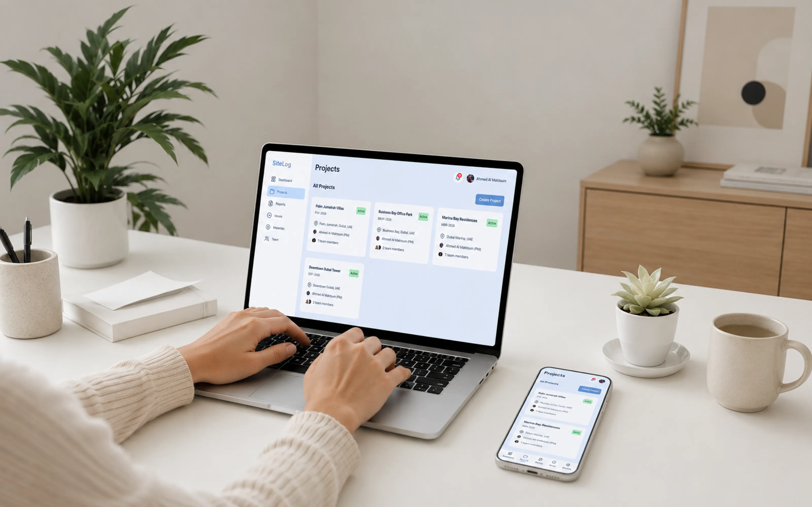
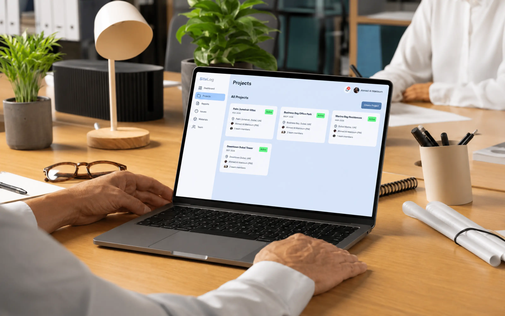
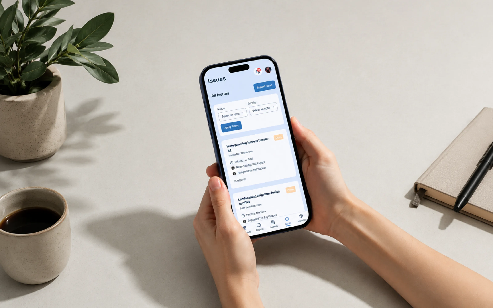
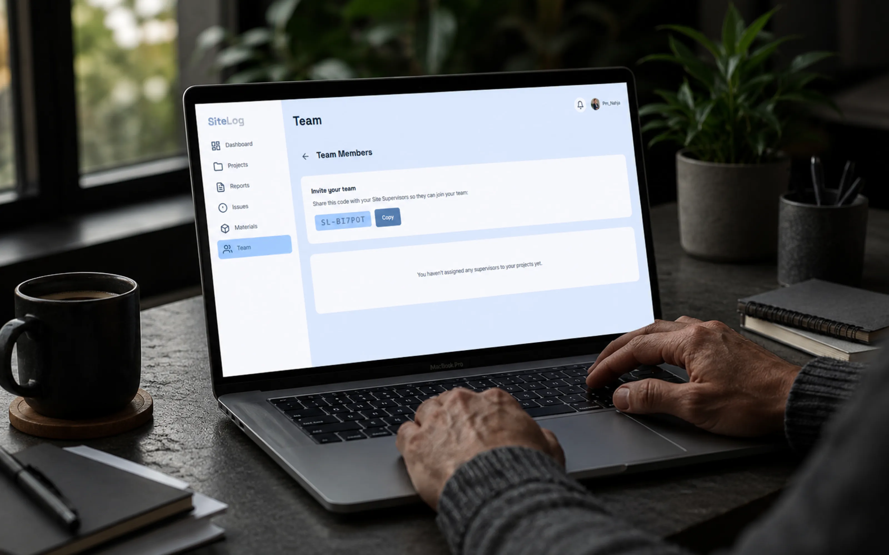

SiteLog
SiteLog is a live B2B site reporting web app for small construction firms that can't afford enterprise tools like Procore or Monday.com. Project Managers oversee every site from one dashboard, while Site Supervisors report, log issues, and request materials from their phones. I designed and built it end to end, solo, including a multi tenant invite code system that keeps each company's data isolated.

The problem
Small construction firms can't afford or justify enterprise project tools, so they run their sites on phone calls, WhatsApp, and paper. The result: issues surface too late, material requests get lost, and when something goes wrong there's no reliable record of what happened on site — or who's accountable.
My role
Designed the UX/UI and built the entire app full-stack, solo, and deployed it to production. I owned the whole product — concept, product decisions, design, development, and launch.
The key decision
Mid-build, I realized the app had no concept of separate organizations — every Project Manager could see every supervisor in the system, including people from other companies. I spotted this multi-tenancy gap and designed an invite-code system: each PM gets a unique code, supervisors join a specific PM's team using that code, and each company's data stays isolated. This turned a single-org demo into a genuine multi-company B2B product.

The Project Manager dashboard — a single view of every site, with progress, budget, and status at a glance.

The Site Supervisor mobile experience — reporting, logging issues, and requesting materials from the field.

The invite code system — each company joins through a unique code, keeping every firm's data isolated.
What I built
- Role-based dual experience — a mobile-first field interface for Site Supervisors and a desktop oversight dashboard for Project Managers
- Invite-code multi-tenancy — PMs invite and manage their own team, with per-company data isolation, plus remove and re-join flows with access control
- Core site workflows — daily reports, issue tracking, and material requests, with image uploads
- Secure authentication — hashed passwords, sessions, and email-based password reset
Stack
Next.js, TypeScript, Prisma, PostgreSQL, deployed on Vercel + Neon, with a custom CSS-Modules design system.
Outcome
Live at sitelog-sage.vercel.app. Currently shared with construction professionals for real-world feedback.